1. Introduction
Kafka and Lispector are often read together. Hélène Cixous gave both writers chapters in the same book of seminars (Cixous 1991), and the cockroach of The Passion According to G.H. is regularly read after Gregor Samsa’s transformation (Arnds 2023). Dixon (1981) goes furthest, arguing that G.H. retells The Metamorphosis and shares its essential structure. These comparisons work by close reading of a few chosen passages. They cannot say how much of either body of work lies close to the other, or where.
Text embeddings seem to offer a way to ask that question across whole books. An embedding model turns each paragraph into a list of numbers so that paragraphs with similar meaning receive similar lists. Comparing every Kafka paragraph with every Lispector paragraph is then a matter of arithmetic. The obstacle is that embeddings record more than meaning. They also record vocabulary, sentence rhythm, genre, period and, for writers read in English, the habits of each translator. For two writers from different languages, rendered by a dozen translators, those signals are strong. In my corpus, shown one unseen paragraph by each writer, a simple classifier trained on the embeddings tells which is Kafka’s 97% of the time (a held-out ROC AUC of 0.97), and only about one in eight of a paragraph’s nearest neighbours is by the other writer, where random authorship would give one in two. A map drawn from these embeddings is a map of two voices.
This paper describes a framework for looking past that division, and tests it. The framework has three steps. It reads each paragraph with an embedding model instructed to attend to theme. It then removes the author signal with two closed-form operations: LEACE, which makes the two writers’ average positions coincide (Belrose et al. 2023), and CORAL, which makes their spreads match (Sun, Feng and Saenko 2016). Finally, it pairs paragraphs across the two writers. A few paragraphs resemble almost everything and would win too many matches, so each paragraph’s score is lowered in proportion to how popular it is (Conneau et al. 2018). Only pairs in which each paragraph is the other’s best match are kept. I call these pairs bridges.
Five terms carry a fixed meaning in what follows. A voice is the recognisable manner of a writer, a translator or a genre, as it survives in English text and shows up in an embedding: anything a classifier can use to tell the sources apart. A lens is one way of embedding the passages, fixed by the model and the instruction it is given (Section 4.1). A bridge is a Kafka passage and a Lispector passage that are each other’s best match. A cluster is any group of passages that a clustering algorithm puts together. A constellation is a cluster of the erased map that I have named by reading its most central passages (Section 4.4).
This framework is an exploratory tool, not literary proof. It simply surfaces ranked candidate passages for critical examination. Whether an identified bridge reveals meaningful kinship between Kafka and Lispector is ultimately for their readers to decide. A methods paper can only determine what the system preserves, excludes, or invents, and how stable its results remain. Those are the questions I answer here:
My main findings are these.
- The framework finds the same content across two voices when the answer is known. Two translations of The Metamorphosis, by Susan Bernofsky and by Willa and Edwin Muir, give a ground truth that uses no embeddings. Treating the translators as the two “authors”, the framework pairs a paragraph with its own other translation 90% of the time (chance: under 1%), and erasure does not reduce this.
- Erasure removes the contrast it is given, and only that. Once the author signal is scrubbed, simple classifiers can no longer guess who wrote a given paragraph any better than a coin flip, and passages by both writers mingle freely. While subtler, more intricate stylistic traces linger, broader context like the translator’s voice, genre, and time period survives intact.
- Erasure has a cost, concentrated in the second step: the paragraph that actually comes next in a text becomes harder to find, mostly because paragraphs from other books now compete with it.
- Counting bridges proves nothing. Shuffling the author labels produces as many bridges as the real labels.
- Bridges are stable under tuning but not under a change of lens. Changing the erasure’s dimensionality or the matching’s neighbourhood leaves 85 to 94% of the top 300 bridges in place; changing the embedding model leaves 5 to 13%, and changing only the instruction leaves 29%.
Findings 3 to 5 are limits of the framework. Whether erasure improves the bridges for a human reader remains untested; Section 5.6 sketches a blind reading that could answer it.
2. Background
2.1 Style and content in computational literary study
Authorship attribution has long exploited the fact that writers are recognisable from features that carry little meaning, above all the frequencies of common words (Burrows 2002; Stamatatos 2009). The same fact is a nuisance when the goal is to compare what writers say. Work on style representations has shown that models trained to recognise authors also learn topic, because authors tend to write about certain things, and has tried to control for it (Wegmann, Schraagen and Nguyen 2022). My problem is the reverse: I want content, and the author gets in the way.
Computational literary studies has debated what such models can see. Long and So (2016) use machine classification alongside close reading to study the English haiku. Underwood (2019) argues for measurement at the scale of literary history. Da (2019) contends that many such results are either obvious or artefacts of method. Dexter et al. (2017) use stylometric and machine-learning techniques to study inexact literary relationships, such as influence without quotation, which is close to the question here. I take from this debate the need to state what each measurement can and cannot show, and to report the ones that go against me.
2.2 The translator’s signal
Every text in this study is a translation, so the question of whose voice an embedding records is sharp. Stylometric work on translation has found that frequency-based methods usually identify the original author, not the translator (Rybicki 2012), though translators can be told apart when one text is divided between them (Rybicki and Heydel 2013). Those studies use word frequencies; embeddings are a different kind of representation, and I test the question directly with the two translations of The Metamorphosis (Section 5.3).
2.3 Removing a concept from a representation
Machine-learning research on fairness has developed ways to remove a protected attribute, such as gender, from learned representations. Adversarial training leaves the attribute recoverable (Elazar and Goldberg 2018). Iterative projection removes the directions a linear classifier uses (Ravfogel et al. 2020). LEACE gives the least-squares edit after which no linear classifier can recover the attribute, in closed form (Belrose et al. 2023). None of these guarantees removal against nonlinear classifiers, which is why I add a second step borrowed from domain adaptation: CORAL aligns the covariance of two populations (Sun, Feng and Saenko 2016). For matching across two populations I use cross-domain similarity local scaling (CSLS), introduced for aligning word vectors across languages (Conneau et al. 2018). It corrects for hubness, the tendency of a few points in high-dimensional spaces to be the nearest neighbour of many others (Radovanović, Nanopoulos and Ivanović 2010).
The closest work is Fan et al. (2025), who use LEACE to remove confounders such as a text’s source or language from document embeddings, and show that clustering and retrieval across pooled corpora improve without degrading the embeddings. Their corpora are political and legal texts. To my knowledge, these techniques have not been applied to compare literary authors, and a search of the literature found no such study.
3. Corpus
The corpus is ten books in English translation, five by each writer (Table 1). The plain texts of the books are cut to the work’s own first and last lines. Text was split at paragraph boundaries. Paragraphs shorter than 70 words were joined to the next paragraph within the same story, chapter, letter or crônica; paragraphs longer than 280 words were split at sentence ends into near-equal parts; fragments under 35 words that could not be joined were dropped (83 fragments, 1,046 words in all). The result is 5,324 passages: 2,309 by Kafka and 3,015 by Lispector, with a median length of 119 words.
Table 1. Books, translators and passages.
| Writer | Book | Translator(s) | Passages |
|---|---|---|---|
| Kafka | The Metamorphosis | Susan Bernofsky | 123 |
| Kafka | Aphorisms | Willa and Edwin Muir; Michael Hofmann | 65 |
| Kafka | Letters to Milena | Philip Boehm | 585 |
| Kafka | The Complete Stories (without The Metamorphosis) | Willa and Edwin Muir; Tania and James Stern; others | 973 |
| Kafka | Amerika: The Missing Person | Mark Harman | 563 |
| Lispector | The Passion According to G.H. | Idra Novey | 417 |
| Lispector | Too Much of Life: Complete Crônicas | Margaret Jull Costa; Robin Patterson | 737 |
| Lispector | Água Viva | Stefan Tobler | 206 |
| Lispector | The Hour of the Star | Benjamin Moser | 204 |
| Lispector | The Complete Stories | Katrina Dodson | 1,451 |
Two decisions about duplicates. The Complete Stories of Kafka contains the Muirs’ translation of The Metamorphosis, so the novella would otherwise appear twice. I removed the Muirs’ version (122 passages) from the corpus and kept it aside as the second translation for the known-answer test (Section 5.3). Lispector reused some of her own text across books: 13 pairs of passages, mostly between Água Viva and the crônicas, are near-duplicates (cosine above 0.85 in the general sentence embedding). I kept them. They can only form same-author pairs and so cannot become bridges, but they do affect neighbourhoods.
Length. Kafka’s passages are longer (median 151 words against Lispector’s 104), and length alone predicts the author better than chance (AUC 0.67). Embeddings are sensitive to length, so part of the author signal is a length signal.
Rights. The primary texts remain in copyright. The repository distributes no source texts or precomputed embeddings. It provides only the replication scripts and instructions for readers to embed, align, and bridge their own lawfully acquired copies. The code is available under an MIT license at github.com/snes19xx/mapping-kafka-lispector-ml.
4. Method
I describe each step in words first; the formulas and settings are collected in Box 1.
4.1 The lens: four embeddings
I embed every passage four ways, to separate the effect of the model from the effect of its instruction.
- General sentence model: all-mpnet-base-v2, a widely used sentence-transformer (Reimers and Gurevych 2019; Song et al. 2020).
- Qwen3-Embedding-0.6B without instruction (Zhang et al. 2025).
- Qwen3 with a neutral instruction: “Identify the theme of this literary passage”.
- Qwen3 with the theme instruction used for the map: “Identify the existential and philosophical theme of this literary passage, setting aside its plot, characters, setting and prose style.”
Telling the embedding model to attend to shared themes builds in a deliberate bias. Every text, whatever its genre or register, is pushed toward a conceptual frame that earlier comparative scholarship has already chosen. Plainer passages, such as Karl Rossmann’s administrative misadventures in a hotel in Amerika or Lispector’s newspaper columns about domestic workers, risk being read through an existential frame they may not share. A neutral instruction serves as the control: it lets me measure how much of the bridge structure reflects content and how much is an effect of the prompt (Section 5.1).
4.2 Erasing the author
LEACE moves each passage the smallest distance needed to make the two writers’ average positions coincide. After that, no classifier that separates the two writers with a straight boundary can tell them apart on the passages it was fitted to. A classifier that looks at the shape of each writer’s cloud of passages, such as one that asks which writer the nearest passages belong to, can still tell them apart. CORAL addresses this. Within the 256 main directions along which passages vary, it reshapes each writer’s cloud so that both are equally spread out and stretched in the same directions.
Two properties of this step matter for what follows. First, it removes one contrast, Kafka against Lispector, and nothing else. Differences between books by the same writer, and between translators of the same writer, are left in place. Second, CORAL uses each passage’s author label to transform it. The final space is therefore built to look author-free at the level of averages and spreads; that constellations mix the two writers is partly a consequence of the transform.
4.3 Bridges
Matching passages across two populations runs into a problem called hubness: a few passages sit close to nearly everything, so they win most of the matches. CSLS corrects for this by lowering each passage’s score according to how similar it is, on average, to its ten nearest neighbours on the other side. A bridge is a pair made of one Kafka passage and one Lispector passage, where each is the best match for the other under this corrected score. The final space yields 1,203 bridges. I rank them by score and examine the top 300.
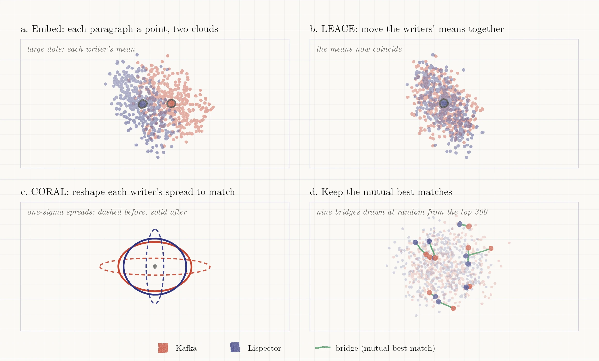
4.4 The map and its constellations
For display, the erased space is projected to two dimensions with UMAP (McInnes, Healy and Melville 2018). All measurements are made in the full space. Clusters are groups of passages found by Ward clustering (Ward 1963) of a ten-dimensional UMAP projection; I use 18. On the erased map I call them constellations once they have been named. They are a reading aid, and Section 5.4 shows they are only moderately stable. Names were given by reading each group’s most central passages.
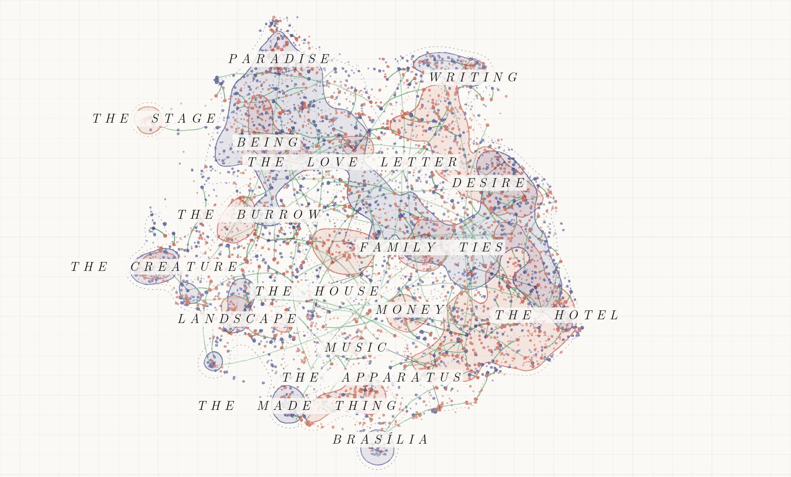
4.5 What each test can show
I evaluate the framework with five kinds of test. Table 2 lists them, with the question each can answer and the one it cannot.
Table 2. Evaluation design.
| Test | Question it answers | What it cannot show |
|---|---|---|
| Author leakage (held-out classifier) | How much author signal remains | Whether what remains is style or subject |
| Neighbourhood mixing | How often a passage’s neighbours are by the other writer | Whether mixed neighbours share anything |
| Next-paragraph retrieval | Whether local, plot-level content survives | Whether thematic content survives |
| Known-answer test (two translations) | Whether the framework pairs the same content across two voices | Whether it pairs different texts that share a thought |
| Nulls and stability | Whether bridge counts and bridges depend on the labels, the settings, the lens | Whether stable bridges are meaningful |
| Blind human reading (proposed, Section 5.6) | Whether readers find erased bridges closer in thought than baselines | Anything about Kafka and Lispector beyond the pairs read |
Box 1. Technical details.
Embeddings. Vectors are normalised to unit length. Model revisions are pinned (all-mpnet-base-v2 at
e8c3b32, Qwen3-Embedding-0.6B at97b0c61).LEACE. With Σ the covariance of the vectors x, Σxz their cross-covariance with the one-hot author label z, W = Σ−1/2 and P the orthogonal projection onto the column space of WΣxz, the erased vector is x − W+PW(x − μ).
CORAL. In the top 256 principal directions of the LEACE output (94% of variance for the theme lens), each author’s passages are centred, whitened with that author’s covariance, and recoloured with the pooled covariance. A small ridge keeps the covariances invertible.
CSLS. For Kafka passage k and Lispector passage l, CSLS(k, l) = 2 cos(k, l) − rL(k) − rK(l), where rL(k) is the mean cosine of k to its 10 nearest Lispector passages and rK(l) likewise.
Author leakage. Held-out ROC AUC of a logistic probe and of a 15-nearest-neighbour vote. The eraser is fitted on four of five folds; the classifier is cross-fitted within the held-out fold, so no score comes from a model that saw the passage or the eraser’s fitting data.
Mixing. The share of other-author passages among each passage’s 15 nearest neighbours, divided by the share random authorship would give. A permutation null (200 shuffles) gives 0.99 to 1.01.
Retrieval. For the 4,790 passages followed by another in the same unit, the rank of the true next paragraph among all other passages (chance recall at 10: 0.19%), and among passages of the same book (chance about 1.9%).
Intervals. Proportions of counts use exact (Clopper and Pearson 1934) intervals; other intervals are 95% percentile bootstraps over passages (2,000 resamples).
Stability. Adjusted Rand index (Hubert and Arabie 1985) between constellations from five UMAP seeds; overlap of the top 300 bridges under each variant.
Software. Python 3.11, scikit-learn 1.8 (Pedregosa et al. 2011), umap-learn 0.5.12, sentence-transformers 6.1. Environment file and code in the repository.
5. Results
5.1 The raw space sorts by writer, whatever the lens
Every lens separates the two writers almost perfectly (Table 3). The general sentence model and uninstructed Qwen3 identify the author of an unseen passage with AUC 0.97, and only 13% of a passage’s 15 nearest neighbours are by the other writer, against 49% under random authorship.
Table 3. The raw space under four lenses. AUC: held-out linear author probe (0.5 is chance). Mixing: other-author neighbours over the random-authorship rate (1 is fully mixed). R@10: share of passages whose true next paragraph is among the 10 most similar.
| Lens | Author AUC | Mixing | R@10 |
|---|---|---|---|
| General model (mpnet) | 0.969 [0.965, 0.973] | 0.26 | 36.3% |
| Qwen3, no instruction | 0.970 [0.967, 0.974] | 0.26 | 41.6% |
| Qwen3, neutral instruction | 0.960 [0.955, 0.965] | 0.31 | 29.0% |
| Qwen3, theme instruction | 0.949 [0.943, 0.954] | 0.37 | 29.9% |
Holding the model fixed isolates the instruction. Any instruction to read for theme makes the space less plot-bound: next-paragraph recall falls from 42% to about 30%, because adjacent paragraphs share plot, names and setting, which the instruction steers away from. The instruction also mixes the writers a little. The existential wording mixes them more than the neutral wording (0.37 against 0.31), which is the extent to which the frame built into the prompt pulls the two writers together before any erasure. None of the instructions comes close to removing the author: the probe’s AUC stays at 0.95 or above.
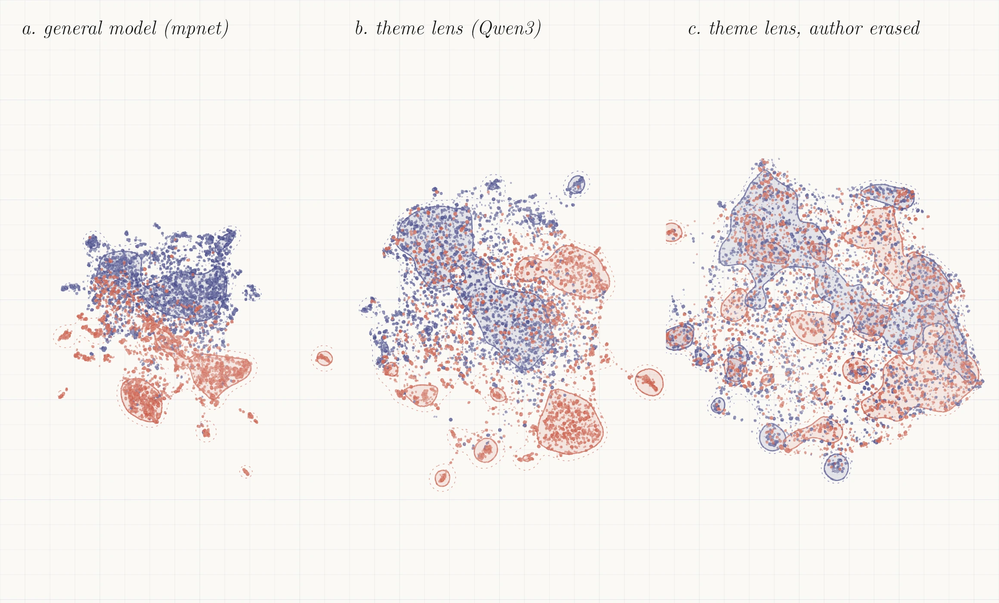
5.2 What erasure removes, and what it costs
Table 4 follows the theme lens through each step. The full table for all four lenses is in Appendix A.
Table 4. Erasure on the theme lens, with 95% intervals. kNN AUC: held-out 15-nearest-neighbour author vote. Book R@10: next-paragraph recall among passages of the same book.
| Step | Linear AUC | kNN AUC | Mixing | R@10 | Book R@10 | Dimensions |
|---|---|---|---|---|---|---|
| Raw | 0.949 [0.943, 0.954] | 0.936 [0.929, 0.942] | 0.37 [0.36, 0.38] | 29.9% [28.6, 31.1] | 36.8% | 1,024 |
| LEACE | 0.574 [0.558, 0.590] | 0.893 [0.885, 0.902] | 0.46 [0.45, 0.47] | 29.3% [28.0, 30.6] | 36.6% | 1,024 |
| LEACE + truncation to 256 | 0.44 [0.43, 0.45] | 29.6% [28.4, 30.9] | 36.8% | 256 | ||
| LEACE + CORAL (the map) | 0.581 [0.566, 0.597] | 0.720 [0.706, 0.734] | 0.79 [0.78, 0.79] | 24.9% [23.8, 26.1] | 34.8% | 256 |
The linear signal goes. LEACE takes the linear probe from 0.95 to 0.57. The small excess over 0.5 is the cost of fitting the eraser on other passages than those it is tested on.
A nonlinear trace remains. A nearest-neighbour vote still recovers the author with AUC 0.89 after LEACE alone, because each writer’s cloud keeps its own shape once the averages coincide. CORAL reduces this to 0.72. That is well above chance: neighbourhoods on the map are still partly sorted by writer. Mixing rises from 0.37 to 0.79, so a passage’s neighbours are now 38% by the other writer, against 49% under random authorship.
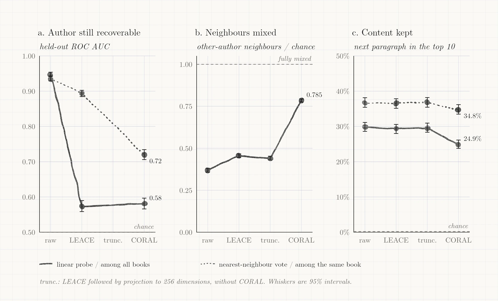
Book identity survives. Erasure removes one contrast, and the others are untouched. A classifier asked which of a writer’s five books a passage comes from succeeds 89% of the time for Kafka before erasure and 91% after (majority class: 42%), and 72% and 75% for Lispector (majority class: 48%). Book identity bundles translator, genre and period. The map therefore stops separating the two writers on average, but it still separates their books, and any reader of a bridge should know which books its ends come from.
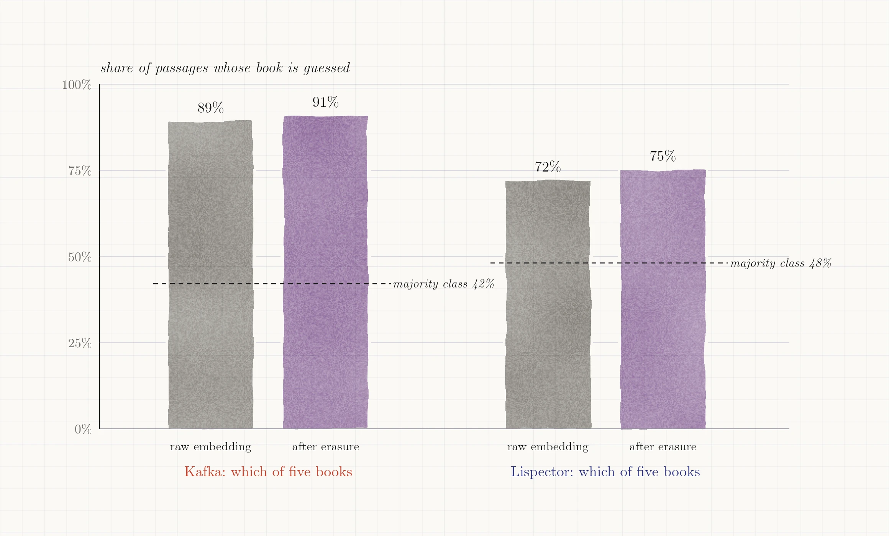
The cost is CORAL’s, and it falls mostly across books. Next-paragraph recall at 10 is unchanged by LEACE and by truncation to 256 dimensions (29.3% and 29.6% against 29.9%), and falls to 24.9% with CORAL, a relative loss of 17%. The median rank of the true next paragraph moves from 60 to 102, still far better than chance (recall at 10 by chance is 0.19%). Within a single book the loss is much smaller, from 36.8% to 34.8% (5% relative). Most of the cost therefore comes from passages of other books, which erasure has moved closer and which now compete with the true next paragraph; the passage’s own neighbourhood is barely damaged. Next-paragraph retrieval measures plot-level content, which the theme instruction is designed to discount, so it is a basic check, not a measure of thematic content.
The general model behaves differently. On mpnet, erasure mixes the writers less (0.67) and costs nothing in recall (36.3% before, 36.4% after). The trade-off between mixing and recall is specific to the lens.
5.3 A known answer: two translations of The Metamorphosis
Bernofsky (2014) and the Muirs (1933) translated the same German paragraphs in the same order. That gives a test with a known answer: take the two translations as two “authors”, apply the framework, and check whether it pairs each paragraph with its own other translation. This is the framework’s claim, finding the same content across two voices, in the one case where the right answer is not a matter of judgement.
Ground truth without embeddings. The novella has three parts. Within each part, I place every passage on a scale from 0 to 1 by the share of the part’s words that precede it; the translations run to 21,599 and 21,034 words, in 40/41/42 and 39/41/42 passages per part. A Bernofsky passage and a Muir passage are counterparts when their stretches overlap by at least half of the shorter one. This gives 129 counterpart pairs and covers all 123 Bernofsky and all 122 Muir passages. Because the alignment uses position only, the test does not score embeddings against themselves.
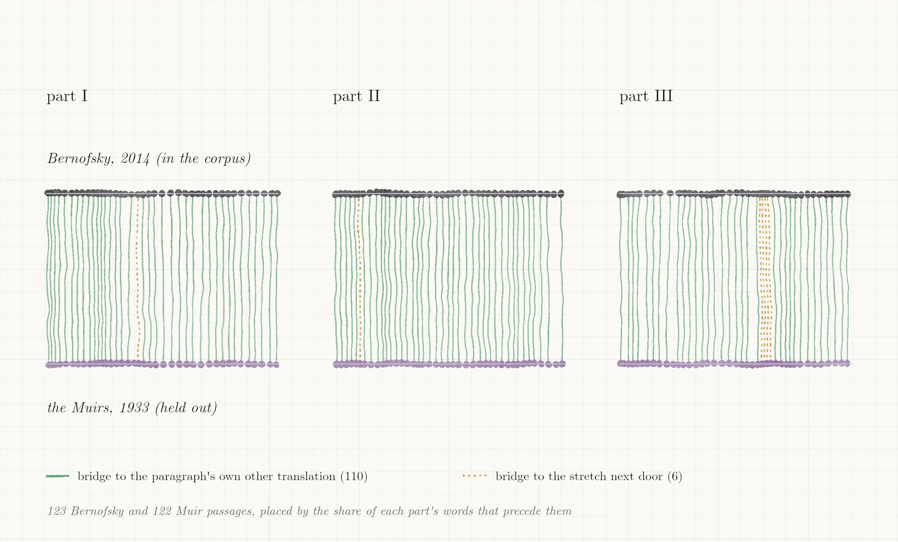
The framework recovers the answer. Table 5 reports, for each condition, the bridges found between the two translations, their precision (the share that join counterparts), their recall (the share of Bernofsky passages that end up in a correct bridge), and top-1 accuracy (the share of Bernofsky passages whose single best match is a counterpart).
Table 5. The known-answer test. Chance top-1 accuracy is 0.9%.
| Condition | Bridges | Precision | Recall | Top-1 |
|---|---|---|---|---|
| General model (mpnet), raw | 113 | 0.94 | 0.86 | 0.91 |
| Qwen3, no instruction, raw | 118 | 0.95 | 0.91 | 0.94 |
| Qwen3, neutral, raw | 106 | 0.95 | 0.82 | 0.85 |
| Qwen3, theme, raw | 115 | 0.96 | 0.89 | 0.90 |
| Theme, translator erased (LEACE) | 115 | 0.96 | 0.89 | 0.90 |
| Theme, translator erased (LEACE + CORAL, 16 dims) | 106 | 0.94 | 0.81 | 0.83 |
| Theme, translator erased (LEACE + CORAL, 32 dims) | 114 | 0.96 | 0.89 | 0.90 |
| Theme, translator erased (LEACE + CORAL, 64 dims) | 118 | 0.95 | 0.91 | 0.92 |
| Theme, the map’s own eraser | 116 | 0.95 | 0.89 | 0.90 |
In every condition, about 95% of bridges join a paragraph to its own translation, and the “wrong” ones land on an adjacent, overlapping stretch (precision rises to 0.98 to 1.00 if any overlap counts). Erasing the translator does not reduce accuracy, except when CORAL is squeezed to 16 dimensions. (CORAL is limited to 64 dimensions here because each translation has only about 120 passages.) The last row applies the map’s own author eraser, fitted on the whole corpus, to both translations: it too leaves the answer intact. Erasure does not destroy the content the instrument relies on.
The test is easy. Raw embeddings already score about 0.90. Two translations of the same paragraph are far more alike than two different texts, and the translators’ voices are weak by comparison: a classifier separating Bernofsky from the Muirs reaches an AUC of only 0.62 to 0.67 (with aligned passages kept in the same cross-validation fold, so that content cannot give the answer away), against 0.95 to 0.97 for Kafka against Lispector. The test therefore shows that erasure is safe for content matching; it cannot show that erasure is necessary.
Voice does not pull matches away. A harder version searches each Muir passage against all 2,309 Kafka passages in the corpus. Most of Kafka’s Complete Stories is also the Muirs’ translation, so a space organised by translator would match a Muir passage to another Muir story. It does not: the counterpart comes first for 89% of Muir passages on the raw theme lens and 90% on the map, and a different Muir-translated story comes first for 1 of 122.
A distance ladder. On the map, the median cosine between two translations of one paragraph is 0.88; between the two ends of a shown bridge, 0.63; between adjacent paragraphs of one text, 0.45; between random Kafka passages, 0.00. Bridge ends are selected for closeness, so this comparison is descriptive, but it places bridges between “same text, different voice” and “same story, next paragraph”.
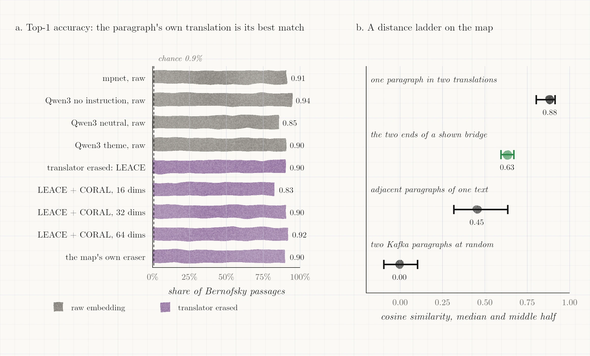
Individual bridges depend on wording. For the 56 shown bridges whose Kafka end is in The Metamorphosis, I replaced the Bernofsky passage by its Muir counterpart and asked whether the same Lispector passage remains its best match. It does for 21 (38%); for most of the rest it drops to second place (median rank 2). A bridge is a strong but local preference: the Lispector partner stays near the top, but which passage wins depends on the translator’s wording.
What this test does not validate. Counterparts are the same text. Bridges between Kafka and Lispector join different texts that may, or may not, share a thought. The test shows that the framework can see through a change of voice to identical content and that erasure preserves this ability. Whether it finds shared thought in different content is the question for human readers (Section 5.6).
5.4 Bridges: nulls and stability
Bridge counts are not evidence. The map yields 1,203 bridges. If the author labels are shuffled at random and erasure and matching are repeated, the framework finds 1,283 to 1,336 “bridges” (20 shuffles), and even the weakest of their top 300 scores higher (0.27 to 0.28) than the weakest of the real top 300 (0.18). Shuffled “cross-author” pairs include passages from the same book, which are easy to match. Mutual matching will always find pairs; the number of pairs and their scores say nothing about kinship between two writers. For the same reason, I do not report that bridges outscore random pairs, which is guaranteed by how they are selected.
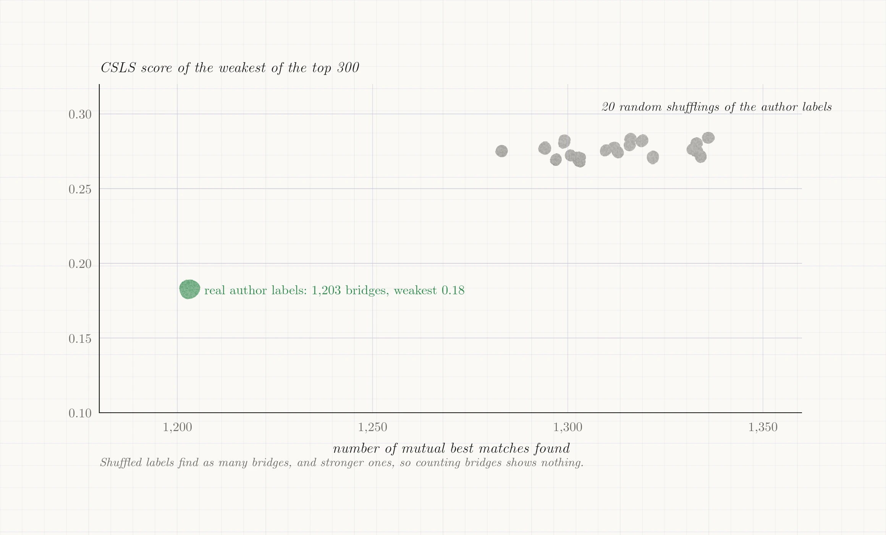
Bridges survive tuning. Table 6 compares the top 300 bridges under each variant with the map’s own.
Table 6. How many of the map’s top 300 bridges are also in the variant’s top 300.
| Variant | What changes | Top-300 overlap |
|---|---|---|
| CORAL at 128 dimensions | tuning | 256 (85%) |
| CORAL at 512 dimensions | tuning | 281 (94%) |
| CSLS with 5 neighbours | tuning | 260 (87%) |
| CSLS with 20 neighbours | tuning | 270 (90%) |
| No erasure | erasure | 126 (42%) |
| Erase book (10 classes), not author | erasure | 154 (51%) |
| Qwen3, neutral instruction | lens | 87 (29%) |
| Qwen3, no instruction | lens | 40 (13%) |
| General model (mpnet) | lens | 15 (5%) |
Bridges depend on the lens. Changing the model, or only the instruction, changes most of the bridges. This is the most important limit on interpretation: the bridges are the theme lens’s pairs, and a different lens would propose different ones. Of the 300, 100 are found by at least seven of the nine variants and 6 by all nine. I suggest that readers start from these.
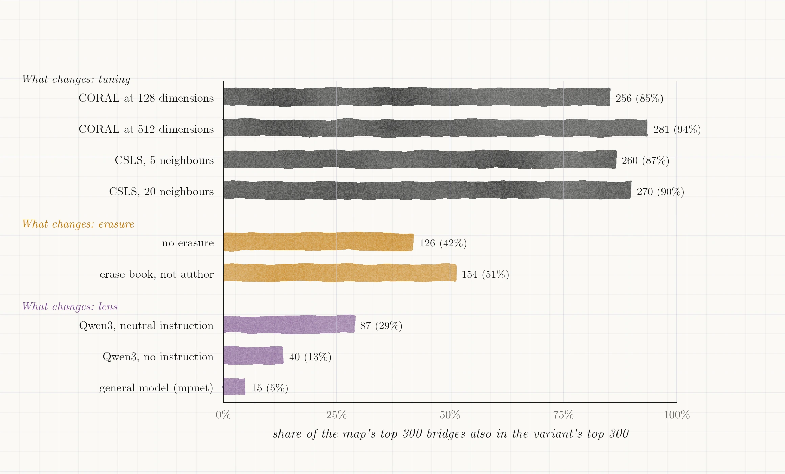
Erasure changes a third of the list. 115 of the 300 shown bridges are not found at all without erasure, and 185 are. Most of the strongest and most stable bridges exist before erasure; what erasure adds is a set of further pairs (Section 5.5 gives examples).
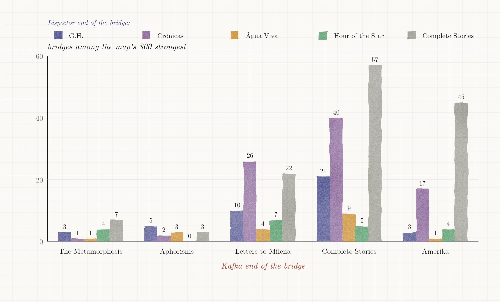
Constellations are moderately stable. Re-running the ten-dimensional projection with four other random seeds and clustering again gives adjusted Rand indices of 0.61 to 0.67 against the map’s constellations (1 is identical, 0 is chance). The broad regions recur; their boundaries do not. Constellations are best treated as a way to browse the map, not as findings.
The map mixes the writers, by construction. Clustering the raw space the same way gives 12 of 18 clusters that are at least 90% one writer. On the map, Kafka’s share of a constellation ranges from 28% to 89%. Since CORAL makes the two writers’ clouds match in average and spread, a mixed map is expected. The informative cases are the regions that stay lopsided despite the transform. The most lopsided, The Stage (89% Kafka, 44 passages), is almost entirely one Kafka text, the dramatic fragment “The Warden of the Tomb”, with five Lispector passages.
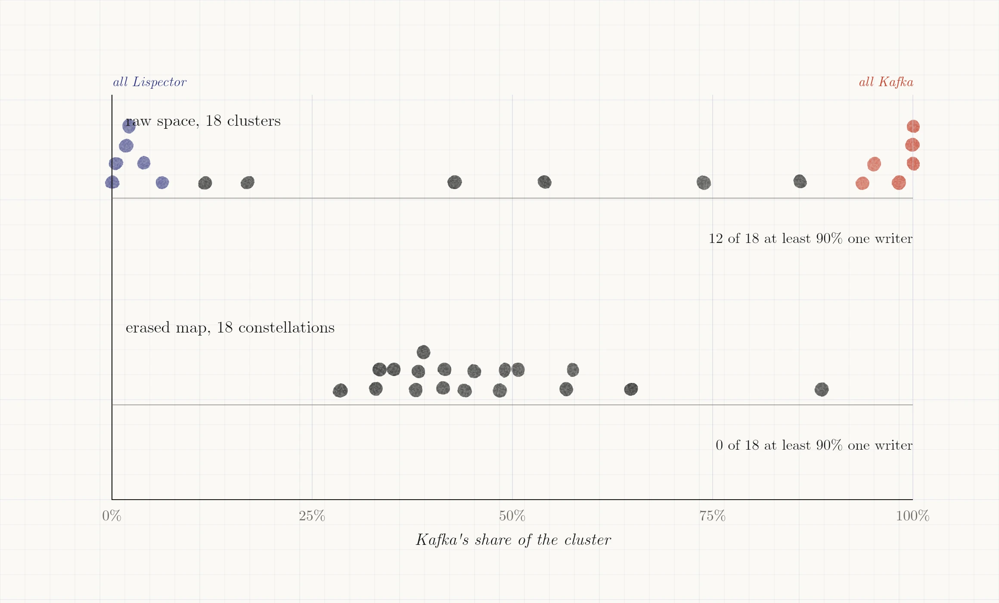
The five are informative. Two are scenes of rank and ceremony: in “Mystery in São Cristóvão” a rooster, a bull and a “lord … under his mask” freeze at a window, and in “William Harvey” a powerful man rings for his butler while his guest tells a fortune. Two come from The Hour of the Star: a pair of children trading claims in quick dialogue, and Macabéa’s death, which the narrator stages with “the Prince of Darkness” and “Et tu, Brute?!”. The fifth, a crônica, reconstructs a noblewoman’s castle, grooms and horses. What ties them to the play is a court-like cast (prince, chamberlain, lord, butler, noblewoman) and a mode of speech, dialogue or tableau, more than a shared idea. So the constellation is best read as the play’s form surviving erasure, not as a convergence of thought. The erasure removes what separates Kafka from Lispector on average, but a drama with speaker tags and stage directions is a single text with its own conventions, and no average over two writers can absorb it. The five Lispector passages join it because they borrow the theatre’s furniture. This agrees with the finding that book identity survives (Section 5.2): the map is mixed on average, and where it is lopsided, genre and form are often the reason.
5.5 Illustrations
I give five bridges to show what the framework surfaces and how it differs from simpler matching. They are illustrations, not evidence: they were chosen by me, and their value must be judged by readers. For each Kafka passage I also report the Lispector passage chosen by TF-IDF cosine, a purely lexical baseline that matches shared words.
Sleep (The Metamorphosis / The Passion According to G.H.; found by 6 of 9 variants). Critics pair these books for the insect. The bridge pairs two passages about sleep once the body has stopped being human. Gregor cannot go back to sleep because “it was his habit to sleep on his right side, and in his present state he was unable to assume this position.” G.H. falls asleep “as immediately as a roach falls asleep on a vertical wall. There was no human stability in my sleep”. The lexical baseline instead picks a Lispector story about an alarm clock and waking, which shares the words for sleep but not the situation. The same situation is rendered in opposite grammars: Kafka’s is a practical problem stated in the syntax of routine, Lispector’s a simile that dissolves the human. This is the kind of contrast the framework can bring to a reader, and the kind of reading it cannot do.
Last songs (“Josephine the Singer, or the Mouse Folk” / The Hour of the Star; 6 of 9). The last story Kafka finished and the last book Lispector saw into print meet near their endings. In Kafka (in the Muirs’ translation), “The time will soon come when her last notes sound and die into silence.” In Lispector (Moser’s translation), after Macabéa’s death, “With her dead, the bells were ringing but without their bronzes giving them sound.” Neither text’s title, author or position in its book was visible to the model; the pairing rests on the translated text alone. The lexical baseline picks a passage from G.H. on transcendence.
The Departure (“The Departure” / “Sketch of the Demon Horse”; all 9 variants). A rider leaves without a destination (“‘Where is the master going?’ ‘I don’t know’”) and a narrator answers a horse’s night call (“No, I cannot stop going”). This is one of the six bridges every variant finds. Its stability comes partly from a shared object, the horse, which the lexical baseline also picks up (it chooses “Form”, a short piece in Lispector’s Complete Stories about horses).
Two bridges that exist only after erasure. Among the bridges that erasure adds, some join a situation and some an idea. Amerika’s head cook “dictating a letter to a young typist” is paired with Lispector’s “Miss Algrave”, who “was the perfect typist”: a shared job, found by 8 of 9 variants. Kafka’s aphorism on free will (“he is free inasmuch as he can choose the pace and the course of his life”) is paired with a passage of Água Viva on “a certain kind of thinking-feeling that I’ll call ‘freedom’” (also 8 of 9). Erasure does not only add pairs of the second kind. Whether the pairs it adds are worth more than the pairs it loses is a judgement only readers can make (Section 5.6).
A sound in the night (“The Burrow” / “Silent Night, Holy Night”; 5 of 9). Both passages describe a constant sound with no source. Kafka’s creature finds “this very uniformity of the noise everywhere” disturbing and sets out to explain it; Lispector’s narrator hears “air music” that “has no melody” and receives it as a blessing. The bridge matches the situation, not the response to it. I include it as an example of the limit of the framework: it proposes a shared occasion, and the reader supplies the difference. It is also the least stable of the five, and before erasure the theme lens matches the Kafka passage to a different Lispector crônica.
5.6 Reading the bridges blind
The measurements above cannot say whether erasure and hub-corrected matching surface pairs that readers judge closer in thought than simpler methods do. One way to take this analysis further is a blind reading, and this section offers a blueprint for it. I have not run it, and no result in this paper depends on it.
Arms. Pairs would come from six sources: the map’s bridges; bridges from the same lens without erasure (isolating erasure); plain cosine matches in the erased space (isolating hub correction); cosine matches from the general model; TF-IDF matches (a lexical baseline); and random cross-author pairs. Each arm would contribute 35 pairs.
Paired choice. In addition, 70 triads would show one anchor passage and two candidates from the other writer, one from the map’s bridges and one from a rival arm, and ask which is closer in thought. This controls for the anchor, which absolute scoring cannot.
Blinding. Titles, section names and character names would be removed and replaced with a neutral marker; the side on which each writer appears would be randomised; the key would be held by a third person; and the rubric, with worked examples for each score, and the analysis plan would be fixed in a dated file before any items are dealt.
Readers and analysis. Several readers with training in comparative literature, German or Lusophone studies would score independently. Scores would be 2 (the passages turn on the same thought), 1 (a shared motif or situation only) and 0 (unrelated). The analysis would report exact intervals per arm, the probability that a map bridge outscores each rival arm, weighted kappa between readers (Cohen 1968), and binomial tests for the triads, whatever they show, including a null or negative result.
A small pilot reading of 60 pairs by a language model, on the previous version of the corpus, is reported in Appendix B. It is not evidence for the claims of this paper.
6. Discussion
What the framework can and cannot support. Erasure makes it possible to ask which paragraphs of two writers lie close to each other once the most obvious signal of who wrote them is removed. It proposes candidates. The known-answer test shows that it recognises the same content through a change of voice and that erasure does not blunt this. It does not show that the candidates share a thought, and the stability results show that they are the candidates of a particular lens. A bridge supports a question for a reader, “what do these two passages have in common, and how does each writer treat it?”, not an answer.
Style and thought. The framework assumes that what a passage says can be separated from how it says it. For Kafka and Lispector that assumption is exactly what many readers would dispute: much of what these writers think is carried by their syntax. Brooks’s objection to paraphrase applies with full force (Brooks 1947). I do not claim to have separated thought from style. I claim to have removed one measurable contrast and to have found places where two different styles meet on similar ground. In the best cases, such as the sleep passages above, a bridge becomes a controlled comparison: the same occasion, rendered in two grammars. That is a use of the framework that turns the objection into the object of study.
Translation. Everything here is read in English. Part of what is erased as “author” belongs to a dozen translators, to two source languages and to genre. The Metamorphosis test suggests that, for embeddings, two translators of the same text differ much less than two writers do, and that a paragraph’s content outweighs its translator’s voice. It also shows that individual bridges are sensitive to the translator’s wording. A study in the original languages, with a multilingual model, would remove this layer; I leave it to future work.
A cleaner design would also compare authors who wrote in English, which removes translation altogether. I did not do this. I chose Kafka and Lispector because they are my favourite writers and I was curious to see the clusters for myself, and the results should be read as a case study on that basis, not as the best test of the method.
Limits. (1) Erasure removes the Kafka/Lispector contrast only on average and in spread; a nearest-neighbour classifier still recovers the author with AUC 0.72. (2) Book identity, and with it translator and genre, is untouched. (3) Erasure costs plot-level content, mostly through competition across books. (4) Erasure removes whatever differs between the writers on average, including true differences of subject; convergences on the map are partly produced by the transform. (5) The theme instruction presupposes the frame critics use for these writers. (6) Bridges depend on the lens. (7) Constellations are only moderately stable. (8) No human evaluation has been done; Section 5.6 only sketches one. (9) The case study is one pair of writers, in translation, chosen by preference; whether the framework transfers to other pairs is untested.
7. Conclusion
Concept erasure can make a pair of writers comparable in an embedding space without destroying the content the comparison needs, as a test with a known answer shows. It does so at a measurable cost, it removes only the contrast it is given, and the pairs it proposes depend on the lens through which the texts are read. Used with those limits stated, it is a way to generate candidate passages for comparison at the scale of whole bodies of work, and a way to make the relation between shared content and different style concrete enough to read.
Data and code availability
Repository: github.com/snes19xx/mapping-kafka-lispector-ml, under an MIT license. The repository contains the analysis code, pinned environment, configuration, and the curation file (constellation names and illustrations). It distributes no source texts or precomputed embeddings; readers embed, align and bridge their own lawfully acquired copies with the scripts provided.
References
Arnds, Peter. 2023. “From Defeat to Resilience: The Human Cockroach in World Literature after Kafka.” World Literature Studies 15 (2): 56-65. https://doi.org/10.31577/WLS.2023.15.2.5.
Belrose, Nora, David Schneider-Joseph, Shauli Ravfogel, Ryan Cotterell, Edward Raff, and Stella Biderman. 2023. “LEACE: Perfect Linear Concept Erasure in Closed Form.” In Advances in Neural Information Processing Systems 36 (NeurIPS 2023).
Brooks, Cleanth. 1947. “The Heresy of Paraphrase.” In The Well Wrought Urn: Studies in the Structure of Poetry. New York: Reynal and Hitchcock.
Burrows, John. 2002. “‘Delta’: A Measure of Stylistic Difference and a Guide to Likely Authorship.” Literary and Linguistic Computing 17 (3): 267-287.
Cixous, Hélène. 1991. Readings: The Poetics of Blanchot, Joyce, Kafka, Kleist, Lispector, and Tsvetayeva. Edited and translated by Verena Andermatt Conley. Minneapolis: University of Minnesota Press. (verified; confirm editor/translator credit)
Clopper, C. J., and E. S. Pearson. 1934. “The Use of Confidence or Fiducial Limits Illustrated in the Case of the Binomial.” Biometrika 26 (4): 404-413.
Cohen, Jacob. 1968. “Weighted Kappa: Nominal Scale Agreement with Provision for Scaled Disagreement or Partial Credit.” Psychological Bulletin 70 (4): 213-220.
Conneau, Alexis, Guillaume Lample, Marc’Aurelio Ranzato, Ludovic Denoyer, and Hervé Jégou. 2018. “Word Translation Without Parallel Data.” In International Conference on Learning Representations (ICLR 2018).
Da, Nan Z. 2019. “The Computational Case against Computational Literary Studies.” Critical Inquiry 45 (3): 601-639.
Dexter, Joseph P., Theodore Katz, Nilesh Tripuraneni, Tathagata Dasgupta, Ajay Kannan, James A. Brofos, Jorge A. Bonilla Lopez, Lea A. Schroeder, Adriana Casarez, Maxim Rabinovich, Ayelet Haimson Lushkov, and Pramit Chaudhuri. 2017. “Quantitative Criticism of Literary Relationships.” Proceedings of the National Academy of Sciences 114 (16): E3195-E3204. https://doi.org/10.1073/pnas.1611910114.
Dixon, Paul B. 1981. “‘A paixão segundo G. H.’: Kafka’s Passion According to Clarice Lispector.” Romance Notes 21 (3): 298-304.
Elazar, Yanai, and Yoav Goldberg. 2018. “Adversarial Removal of Demographic Attributes from Text Data.” In Proceedings of the 2018 Conference on Empirical Methods in Natural Language Processing, 11-21. Brussels.
Fan, Yu, Yang Tian, Shauli Ravfogel, Mrinmaya Sachan, Elliott Ash, and Alexander Hoyle. 2025. “The Medium Is Not the Message: Deconfounding Document Embeddings via Linear Concept Erasure.” In Proceedings of the 2025 Conference on Empirical Methods in Natural Language Processing, 32124-32143.
Hubert, Lawrence, and Phipps Arabie. 1985. “Comparing Partitions.” Journal of Classification 2: 193-218.
Long, Hoyt, and Richard Jean So. 2016. “Literary Pattern Recognition: Modernism between Close Reading and Machine Learning.” Critical Inquiry 42 (2): 235-267.
McInnes, Leland, John Healy, and James Melville. 2018. “UMAP: Uniform Manifold Approximation and Projection for Dimension Reduction.” arXiv:1802.03426.
Pedregosa, Fabian, et al. 2011. “Scikit-learn: Machine Learning in Python.” Journal of Machine Learning Research 12: 2825-2830.
Radovanović, Miloš, Alexandros Nanopoulos, and Mirjana Ivanović. 2010. “Hubs in Space: Popular Nearest Neighbors in High-Dimensional Data.” Journal of Machine Learning Research 11: 2487-2531.
Ravfogel, Shauli, Yanai Elazar, Hila Gonen, Michael Twiton, and Yoav Goldberg. 2020. “Null It Out: Guarding Protected Attributes by Iterative Nullspace Projection.” In Proceedings of the 58th Annual Meeting of the Association for Computational Linguistics, 7237-7256.
Reimers, Nils, and Iryna Gurevych. 2019. “Sentence-BERT: Sentence Embeddings Using Siamese BERT-Networks.” In Proceedings of EMNLP-IJCNLP 2019, 3982-3992.
Rybicki, Jan. 2012. “The Great Mystery of the (Almost) Invisible Translator: Stylometry in Translation.” In Quantitative Methods in Corpus-Based Translation Studies, edited by Michael P. Oakes and Meng Ji, 231-248. Amsterdam: John Benjamins.
Rybicki, Jan, and Magda Heydel. 2013. “The Stylistics and Stylometry of Collaborative Translation: Woolf’s Night and Day in Polish.” Literary and Linguistic Computing 28 (4): 708-717. https://doi.org/10.1093/llc/fqt027.
Song, Kaitao, Xu Tan, Tao Qin, Jianfeng Lu, and Tie-Yan Liu. 2020. “MPNet: Masked and Permuted Pre-training for Language Understanding.” In Advances in Neural Information Processing Systems 33.
Stamatatos, Efstathios. 2009. “A Survey of Modern Authorship Attribution Methods.” Journal of the American Society for Information Science and Technology 60 (3): 538-556.
Sun, Baochen, Jiashi Feng, and Kate Saenko. 2016. “Return of Frustratingly Easy Domain Adaptation.” In Proceedings of the Thirtieth AAAI Conference on Artificial Intelligence.
Underwood, Ted. 2019. Distant Horizons: Digital Evidence and Literary Change. Chicago: University of Chicago Press.
Ward, Joe H. 1963. “Hierarchical Grouping to Optimize an Objective Function.” Journal of the American Statistical Association 58 (301): 236-244.
Wegmann, Anna, Marijn Schraagen, and Dong Nguyen. 2022. “Same Author or Just Same Topic? Towards Content-Independent Style Representations.” In Proceedings of the 7th Workshop on Representation Learning for NLP, 249-268. Dublin.
Zhang, Yanzhao, et al. 2025. “Qwen3 Embedding: Advancing Text Embedding and Reranking Through Foundation Models.” arXiv:2506.05176.
Primary texts
Kafka, Franz. Amerika: The Missing Person. Translated by Mark Harman. New York: Schocken, 2008.
Kafka, Franz. Aphorisms. Translated by Willa and Edwin Muir and by Michael Hofmann. New York: Schocken, 2015.
Kafka, Franz. The Complete Stories. Edited by Nahum N. Glatzer. New York: Schocken, 2012.
Kafka, Franz. Letters to Milena. Translated by Philip Boehm. New York: Schocken, 2013.
Kafka, Franz. The Metamorphosis. Translated by Susan Bernofsky. New York: W. W. Norton, 2014.
Lispector, Clarice. Água Viva. Translated by Stefan Tobler, introduction by Benjamin Moser. London: Penguin Books (Penguin Modern Classics), 2012.
Lispector, Clarice. The Complete Stories. Translated by Katrina Dodson. Edited by Benjamin Moser. New York: New Directions, 2015.
Lispector, Clarice. The Hour of the Star. Translated by Benjamin Moser. New York: New Directions, 2011.
Lispector, Clarice. The Passion According to G.H. Translated by Idra Novey. London: Penguin, 2012.
Lispector, Clarice. Too Much of Life: Complete Crônicas. Translated by Margaret Jull Costa and Robin Patterson. London: Penguin, 2023.
Appendix A. Full measurements
All four lenses at every step. AUC values are held-out; intervals in analysis/data/benchmarks.json. “Trunc.” is LEACE plus truncation to 256 dimensions without CORAL; author probes were not run at that step.
| Lens | Step | Linear AUC | kNN AUC | Mixing | R@10 | Book R@10 | Median rank |
|---|---|---|---|---|---|---|---|
| mpnet | raw | 0.969 | 0.964 | 0.26 | 36.3% | 41.0% | 34 |
| mpnet | LEACE | 0.590 | 0.926 | 0.37 | 35.9% | 40.8% | 36 |
| mpnet | trunc. | 0.33 | 38.4% | 43.7% | 25 | ||
| mpnet | LEACE + CORAL | 0.585 | 0.793 | 0.67 | 36.4% | 44.0% | 36 |
| Qwen3, none | raw | 0.970 | 0.968 | 0.26 | 41.6% | 46.4% | 20 |
| Qwen3, none | LEACE | 0.585 | 0.948 | 0.31 | 41.4% | 46.6% | 20 |
| Qwen3, none | trunc. | 0.30 | 41.6% | 46.5% | 20 | ||
| Qwen3, none | LEACE + CORAL | 0.578 | 0.810 | 0.66 | 38.3% | 45.0% | 31 |
| Qwen3, neutral | raw | 0.960 | 0.952 | 0.31 | 29.0% | 35.5% | 59 |
| Qwen3, neutral | LEACE | 0.565 | 0.914 | 0.40 | 28.6% | 35.1% | 64 |
| Qwen3, neutral | trunc. | 0.40 | 28.5% | 35.4% | 60 | ||
| Qwen3, neutral | LEACE + CORAL | 0.574 | 0.731 | 0.76 | 25.3% | 34.4% | 94 |
| Qwen3, theme | raw | 0.949 | 0.936 | 0.37 | 29.9% | 36.8% | 60 |
| Qwen3, theme | LEACE | 0.574 | 0.893 | 0.46 | 29.3% | 36.6% | 64 |
| Qwen3, theme | trunc. | 0.44 | 29.6% | 36.8% | 60 | ||
| Qwen3, theme | LEACE + CORAL | 0.581 | 0.720 | 0.79 | 24.9% | 34.8% | 102 |
Book identity (linear probe, 5-fold, accuracy; majority class Kafka 0.42, Lispector 0.48):
| Lens | Kafka raw | Kafka erased | Lispector raw | Lispector erased |
|---|---|---|---|---|
| mpnet | 0.92 | 0.92 | 0.77 | 0.77 |
| Qwen3, none | 0.92 | 0.92 | 0.79 | 0.79 |
| Qwen3, neutral | 0.90 | 0.91 | 0.72 | 0.75 |
| Qwen3, theme | 0.89 | 0.91 | 0.72 | 0.75 |
Appendix B. Pilot machine reading (previous corpus)
Before the corpus was deduplicated, 60 cross-author pairs were scored 0/1/2 by the language model that helped build the framework: 20 map bridges, 20 mutual cosine matches from the general model, and 20 random pairs. Source arms were hidden from the reader; authors and book titles were not. Same-thought rates were 10 of 20 for bridges (exact 95% interval 27% to 73%), 5 of 20 for the general model (9% to 49%) and 0 of 20 for random pairs (0% to 17%). A bridge outscored a general-model match with probability 0.69 [0.53, 0.83].
This pilot cannot support the paper’s claims: the reader is not independent of the method, the reading was not blind to author, the corpus contained The Metamorphosis twice, and the arms differ in model, erasure and matching at once, so no difference can be credited to erasure. It motivated the blueprint in Section 5.6.
Appendix C. Settings
| Setting | Value |
|---|---|
| Passage length | join below 70 words; split above 280; drop unjoinable fragments below 35 |
| CORAL dimensions | 256 (variants 128, 512) |
| CSLS neighbourhood | 10 (variants 5, 20) |
| Neighbours for mixing and kNN probe | 15 |
| Bridges examined | top 300 of all mutual CSLS matches |
| Constellations | 18, Ward on 10-d UMAP; UMAP seed 42 (stability seeds 1 to 4) |
| Bootstrap | 2,000 resamples |
| Mixing null | 200 label permutations |
| Shuffle null for bridges | 20 label shuffles |
| Known-answer alignment | counterpart if position overlap is at least half of the shorter passage |